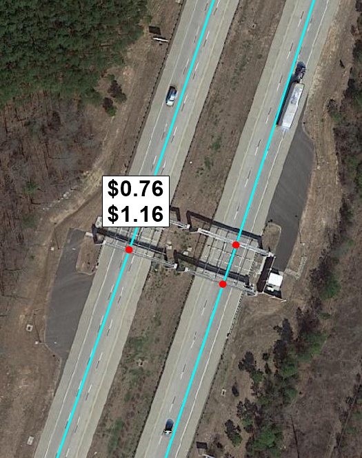
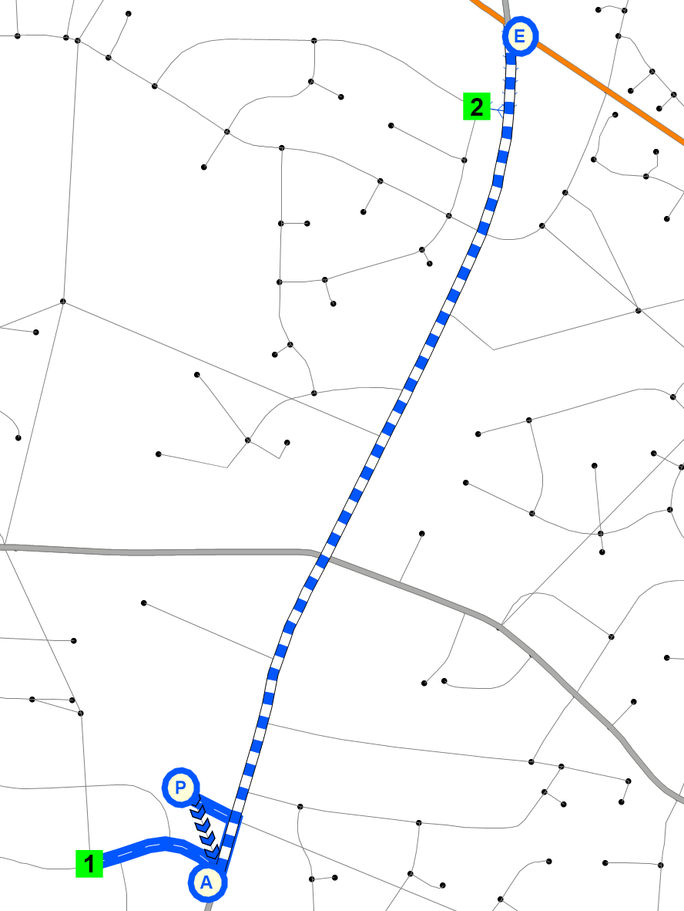
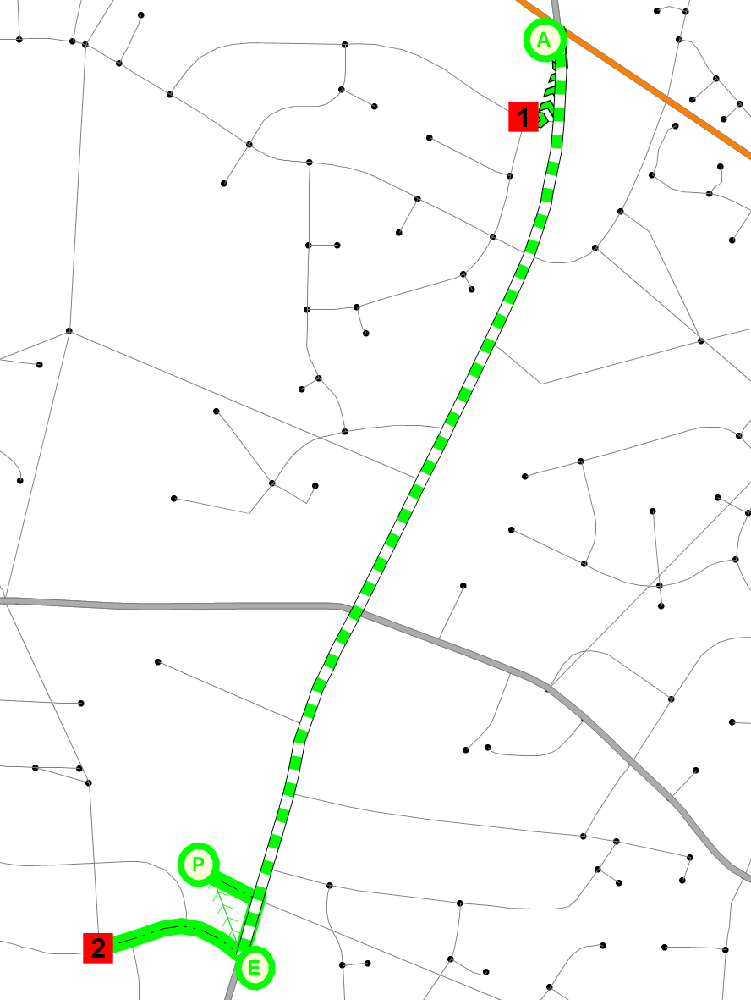

Networks
Caliper Corporation
February 8, 2021
Introduction
The highway and transit networks are critical inputs for any travel model. They provide travel time, accessibility, and other impedance information. The Caliper team used the various existing data sources from the model stakeholders together with other sources including the TIGER line files and review with satellite imagery in order to fashion a new master layer for both roadways and transit.
This documentation uses the term “network” specifically to refer to the machine- readable files (.net and .tnw) TransCAD uses for shortest pathing and assignment. The GIS files that planners and modelers review and edit are referred to as layers. This language is something Caliper is trying to promote to clarify which data component is being referenced.
Roadway Layer
Creation of the master layer
Like TRMv6, the TRMG2 model uses a master layer that contains all projects stakeholders might consider during transportation plan development (including competing ideas). This allows each scenario layer to be exported from the master with little or no manual editing. Information on using the project management tool is covered in the user guide.
The previous highway layer made heavy use of numeric codes that translated into values (e.g. a facility type of 1 might signify interstate). For TRMG2, these fields now contain the string values directly, which improves understanding, usability, and maintenance of the layer. It also makes the model’s GISDK code easier to read.
For these same reasons, the previous “Special” field was broken up into new HOV and Toll-related fields. For example, the “TollType” field includes values like “Free”, “Toll”, and “HOT” (for high-occupancy toll lane). It is easier to understand a query like “TollType = ‘Toll’” compared to “Special = 43”. For a full enumeration of field names and meanings, see the user guide.
The Caliper team also updated the master layer to reflect a 2016 base year, the target year for model estimation (the final layer is a 2020 base year and will be accompanied by a 2020 year model validation process). In other words, if you export a scenario layer without any projects it will reflect the 2016 road system. This was done by permanently modifying the base attributes of the master layer with any projects scheduled to be complete by the base year date. This did include some road closures, and those links dropped out of the layer permanently.
Update of count data
The count data was provided to Caliper by the Stakeholders. The original source of this info was NCDOTs 2017 traffic count program along with a special count collection effort undertaken specifically for model validation. All counts were factored to an Average Weekday Daily Traffic (AWDT) for April 2017.
The previous model used a separate table to hold count data which then had to be joined to the layer to make comparisons. For TRMG2, the basic count data including station ID and daily AWDT were added to the master layer directly. This makes it easier to compare (either manually or in code) between model volumes and count data. Additional information (such as hourly counts) can still be maintained in a separate table and joined to the layer only as needed.
Link layer conflation
Caliper reviewed every link in the road line layer comparing against satellite imagery. Alignments were adjusted to match the imagery. Many links were adjusted, but most adjustments were small. The alignment of many ramps were corrected and collector/distributor systems were added if they were missing.
Capital before and after
Adding all streets
After conflating the existing links to improve alignments with aerials, Caliper upgraded the road layer to include all streets. These additional streets provide a much better representation of the walk and transit paths travelers actually take, and are shown in orange below.
All-Streets Network
Caliper added a PrimaryLink field to the line layer. It can be used to easily select the gray or orange links depending on what the user wants to do.
PrimaryLink = 1: Gray linksPrimaryLink = 0: Orange links
These queries will also be used to make roadway and transit layer creation easier. The minor streets do not have attribute information and should not be included for use by vehicle travel. They will only be used by non-motorized and transit travelers.
Review of All Streets
With all the changes mentioned above, it was important to check that the new master projects remained consistent. To be exhaustive, Caliper wrote code to do this programmatically. For instance, every project in the old master layer had its length checked against the new layer. Of the well over 1000 projects, only 6 had length discrepancies. Each was investigated and corrected as necessary.
Shortest paths were also built with the TRMv6 and TRMG2 layers using free-flow times based on posted speeds. Comparison of the resulting matrices showed that overall the RMSE was only 0.25%, which is very small, indicating close consistency between the layers. The increased confidence that nothing was broken. Additionally, every OD pair with an absolute percentage change greater than 30% was reviewed. The largest relative difference was 62% for one OD pair (between zone 1535 and 1444); in that case, the review revealed that the new layer was correct while the original TRMv6 layer allowed a U-turn where it should not have. See the before and after images below.

Pathing before and after
A small number of OD pairs were reviewed with changes <30%, but each one was reasonable.
Posted speed and lanes review
In addition to checks on the conflation and addition of all streets, Caliper also reviewed the network for attribute correctness. For this review, Caliper used NCDOTs Road Characteristics layer. This was overlaid with the master layer to visually check for discrepancies. Google Streeview was also used occasionally to check lanes and speed limit signs.
Tolls
Tolling is an important policy lever for the Triangle. The Triangle Expressway is an approximately 18 mile long freeway that charges a toll. In addition, the region is considering additional toll facilities include high-occupancy toll (HOT) lanes in the future.
Toll rates were collected from the NC Quick Pass website. Small links representing the toll gantries were added to the link layer. This approach makes it easy to add accurate toll prices to the network. If a user crosses the gantry link, they pay the listed price. In the image below, the first price is for travelers with a transponder and the second is for those without.

The TRMG2 does not predict transponder ownership, but has parameters to describe the percent of toll users that have one. For the base year, the parameters were calculated using data obtained from NC Turnpike Authority. These allowed transponder utilization to be calculated by vehicle class as shown in the table below.
| Vechile Class | Transponder % |
|---|---|
| Auto | 72 |
| SUT | 70 |
| MUT | 76 |
These parameters can be modified during scenario planning.
Finally, the model automatically increases the toll rates for single- and multi-unit trucks based on the stated policy of the turnpike. SUT pay double the listed price while MUT pay four times as much.
Bus Speeds
For express and local buses, the TRMG2 uses factors to determine bus speeds based on auto speeds. The table below shows the factors, which vary by roadway classification and area type, and were borrowed from the SCAG model in California. These were then reviewed for reasonableness by local transit agencies.
| HCMType | AreaType | Local Bus Factor | Express Bus Factor |
|---|---|---|---|
| Freeway | Downtown | 0.85 | 0.85 |
| Freeway | Urban | 0.85 | 0.85 |
| Freeway | Suburban | 0.90 | 0.90 |
| Freeway | Rural | 0.90 | 0.90 |
| MLHighway | Downtown | 0.85 | 0.85 |
| MLHighway | Urban | 0.85 | 0.85 |
| MLHighway | Suburban | 0.90 | 0.90 |
| MLHighway | Rural | 0.90 | 0.90 |
| TLHighway | Downtown | 0.85 | 0.85 |
| TLHighway | Urban | 0.85 | 0.85 |
| TLHighway | Suburban | 0.90 | 0.90 |
| TLHighway | Rural | 0.90 | 0.90 |
| Superstreet | Downtown | 0.50 | 0.78 |
| Superstreet | Urban | 0.50 | 0.78 |
| Superstreet | Suburban | 0.50 | 0.90 |
| Superstreet | Rural | 0.50 | 0.90 |
| MajorArterial | Downtown | 0.50 | 0.78 |
| MajorArterial | Urban | 0.50 | 0.78 |
| MajorArterial | Suburban | 0.50 | 0.90 |
| MajorArterial | Rural | 0.50 | 0.90 |
| Arterial | Downtown | 0.50 | 0.78 |
| Arterial | Urban | 0.50 | 0.78 |
| Arterial | Suburban | 0.50 | 0.90 |
| Arterial | Rural | 0.50 | 0.90 |
| MajorCollector | Downtown | 0.50 | 0.78 |
| MajorCollector | Urban | 0.50 | 0.78 |
| MajorCollector | Suburban | 0.50 | 0.90 |
| MajorCollector | Rural | 0.50 | 0.90 |
| Collector | Downtown | 0.50 | 0.78 |
| Collector | Urban | 0.50 | 0.78 |
| Collector | Suburban | 0.50 | 0.90 |
| Collector | Rural | 0.50 | 0.90 |
| Local | Downtown | 0.50 | 0.78 |
| Local | Urban | 0.50 | 0.78 |
| Local | Suburban | 0.50 | 0.90 |
| Local | Rural | 0.50 | 0.90 |
Transit Layer
TRMG2 adds a master layer for transit routes along with a project manager specially designed to transfer routes accurately between line layers. This enhancement greatly reduces the burden of coding and managing projects between various base and future year scenarios.
More detail on how to use the new tools are included in the user’s guide, but information on the creation of the master route system requires a basic understanding of the tool. In short, the transit project manager finds the shortest path between route stops to reconstruct the route on a new layer. This approach struggles when route stops are not frequent enough to get an accurate path, but TRMG2 solves this problem using “shape stops”. These are extra stops along the route that are used to improve alignment, but are then removed.
The maps below give a good example of a potential problem when transferring routes between layers using only stop locations only. The shortest path between stops is not always the route a bus takes.


Transferring without shape points
The maps below show how a single shape stop solves the alignment problem while maintaining the correct number of stops.


Transferring with shape points
Each time a scenario is created, the transit project manager writes out a file next to the route system detailing how accurate the transfer went. This is achieved by comparing lengths before and after as well as checking for any missed stops. Shape stops can be added until the match is exact, but minor differences in route lengths do not have a measurable impact on model results. The table below provides a sample of the comparison table.
| projid | master_route_id | scenario_route_id | master_length | scenario_length | diff | pct_diff | missing_stops |
|---|---|---|---|---|---|---|---|
| 1 | 250 | 99 | 9.2 | 9.0 | -0.1 | -1.2 | 0 |
| 1 | 278 | 106 | 9.7 | 9.6 | 0.0 | -0.2 | 0 |
| 2 | 328 | 132 | 14.4 | 14.3 | -0.1 | -0.8 | 0 |
| 2 | 329 | 133 | 14.3 | 14.2 | -0.1 | -0.7 | 0 |
| 31 | 48 | 10 | 5.5 | 5.5 | 0.0 | 0.0 | 0 |
| 31 | 49 | 11 | 4.2 | 4.2 | 0.0 | 0.0 | 0 |
Transit networking checking
Transit networks are the files TransCAD uses for shortest path, assignment, and other procedures (extension: “tnw”). During the model run, the route system file is converted into many different networks. In TRMG2, a separate transit network file is created for each combination of
- Time of Day
- AM
- MD
- PM
- NT
- Transit Mode
- Local Bus
- Express Bus
- Bus Rapid Transit (if present)
- Commuter Rail (if present)
- Light Rail (if present)
- Access Mode
- Walk
- Kiss-and-Ride (aka drop off)
- Park-and-Ride
Creating separate files facilitates the critical step of auditing the networks. The model translates the route, stop, link, and node layers into a transit network, and it is important to make sure the networks are behaving appropriately. In the TRMG2, for example, the AM and PM PNR networks behave differently. In the AM, where trips are primarily from home to destinations like work, drive access works in the PA direction:
- Drive to a PNR lot
- Walk to the bus access stop
- Ride the bus to the egress stop
- Walk to the final destination
In the PM network, trips are primarily back to home. For this reason, the drive access flow is reversed.
- Walk to the access stop
- Ride the bus to the egress stop
- Walk to the PNR lot
- Drive home
TransCAD can handle this behavior, but it is always important to check that the model code is setup correctly. Separate network files allowed the two maps below to be created quickly to confirm proper behavior.
PNR AM

PNR PM

Caliper Corporation, 2021